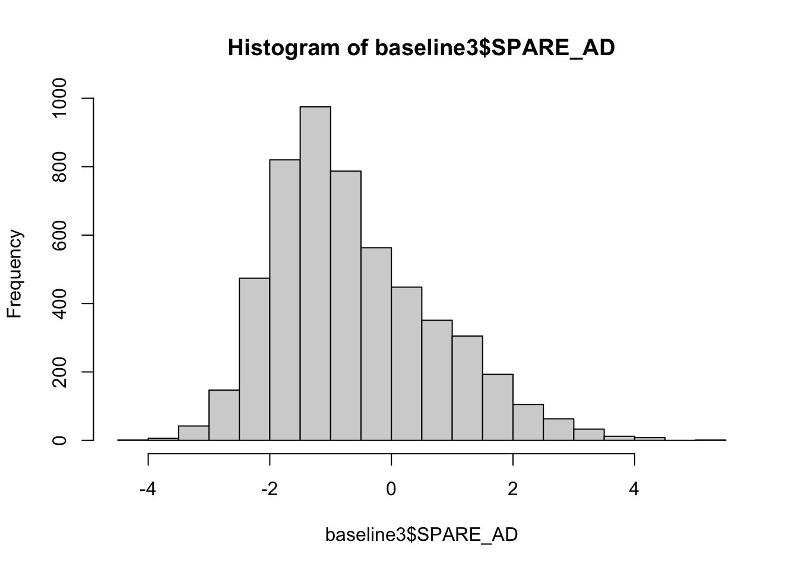

Descriptive Analysis
## load packages
require(vtable)## Loading required package: vtable## Loading required package: kableExtrarequire(ggplot2)## Loading required package: ggplot2require(ggpubr)## Loading required package: ggpubr## self-defined functions
`%!in%` <- Negate(`%in%`)Process Raw Hamarnized Dataset
PHC_Visit frequency table:
##
## 1 2 3 4 5 6 7 8 9 10 11 12 13 14 15 16
## 5884 2531 2459 1756 1299 1003 792 511 421 243 198 142 107 70 40 34
## 17 18 19 20 21 22 23 24 26 <NA>
## 21 16 6 6 3 3 1 2 1 5283Get number of individuals
print(length(unique(raw_noNA$Phenotype_ID)))## [1] 7295Subset and get baseline data
baseline <- raw_noNA[raw_noNA$PHC_Visit==1,]
## remove NA
paste0("Baseline count: ", nrow(baseline))## [1] "Baseline count: 5884"paste0("Number of individuals: ", length(unique(baseline$Phenotype_ID)))## [1] "Number of individuals: 5334"It seems like some individuals have multiple baseline records, so extract those individuals and keep the one with smaller age
## create a unique ID for each case
baseline$caseID <- seq(1,nrow(baseline))
## extract the individual ID with duplicate phenotype ID
ppIDwtDupBL <- baseline$Phenotype_ID[duplicated(baseline$Phenotype_ID)]
## subset the dataset
ppwtDupBL <- baseline[baseline$Phenotype_ID %in% ppIDwtDupBL,]
smallerAge <- aggregate(PHC_Age_T1 ~ Phenotype_ID, ppwtDupBL, min)
smallerAge2 <- merge(smallerAge,baseline,by=c("Phenotype_ID","PHC_Age_T1"))
## remove pp with duplicate phenotype ID and bind with the smaller-age set
tmp <- baseline[baseline$Phenotype_ID %!in% ppIDwtDupBL,]
baseline2 <- rbind(tmp,smallerAge2)
paste0("Baseline count: ", nrow(baseline2))## [1] "Baseline count: 5335"paste0("Number of individuals: ", length(unique(baseline2$Phenotype_ID)))## [1] "Number of individuals: 5334"There is still one mismatch, so find out:
baseline2$Phenotype_ID[duplicated(baseline2$Phenotype_ID)]## [1] "W82050"baseline2[baseline2$Phenotype_ID =="W82050",] ## Study Phenotype_ID Study_Visit PHC_SCANDATE PHC_Visit PHC_Sex
## 549 WHICAP W82050 <NA> 2011-05-11 1 2
## 550 WHICAP W82050 <NA> 2011-05-11 1 2
## PHC_Education PHC_Ethnicity PHC_Race PHC_Age_T1 PHC_Diagnosis
## 549 12 1 6 69.35524 1
## 550 12 1 6 69.35524 1
## PHC_ScannerBatchName SPARE_AD SPARE_BA caseID
## 549 Philips3T 0.1786114 75.55633 5815
## 550 Philips3T 1.9573671 78.61181 5816This individual has the same age at T1 visit. But the SPARE_AD values are quite different. Given that the standard deviation of SPARE_AD is 1.3253874, such difference is quite significant. Since this individual has no cognitive impairment diagnosis, I decided to use the smaller SPARE_AD value, which has caseID = 5815
baseline3 <- baseline2[baseline2$caseID != "5815",]
paste0("Baseline count: ", nrow(baseline3))## [1] "Baseline count: 5334"paste0("Number of individuals: ", length(unique(baseline3$Phenotype_ID)))## [1] "Number of individuals: 5334"clean the files
rm(list=setdiff(ls(), c("baseline3","%!in%")))Participants Summary
Overall Distribution
| Variable | N | Mean | SD | N | Mean | SD | N | Mean | SD | N | Mean | SD |
|---|---|---|---|---|---|---|---|---|---|---|---|---|
| PHC_Age_T1 | 2459 | 73 | 7.4 | 2191 | 73 | 7.5 | 602 | 78 | 7.3 | 82 | 71 | 5.1 |
| SPARE_AD | 2459 | -0.54 | 1.3 | 2191 | -0.59 | 1.4 | 602 | -1 | 1 | 82 | -1.3 | 0.71 |
| SPARE_BA | 2459 | 62 | 12 | 2191 | 62 | 13 | 602 | 65 | 12 | 82 | 56 | 9.5 |
| Diagnosis | 2434 | 2065 | 602 | 74 | ||||||||
| … Alzheimer’s Dementia | 419 | 17% | 399 | 19% | 7 | 1% | 1 | 1% | ||||
| … Mild Cognitive Impairment | 1120 | 46% | 642 | 31% | 131 | 22% | 14 | 19% | ||||
| … No Cognitive Impairment | 895 | 37% | 1024 | 50% | 464 | 77% | 59 | 80% | ||||
| Race | 2459 | 2191 | 602 | 82 | ||||||||
| … American Indian or Alaska Native | 4 | 0% | 12 | 1% | 2 | 0% | 0 | 0% | ||||
| … Asian | 57 | 2% | 39 | 2% | 3 | 0% | 0 | 0% | ||||
| … Black or African American | 179 | 7% | 266 | 12% | 89 | 15% | 28 | 34% | ||||
| … Native Hawaiian or Other Pacific Islander | 2 | 0% | 0 | 0% | 1 | 0% | 0 | 0% | ||||
| … Other, Unknown, or More than one race | 43 | 2% | 14 | 1% | 8 | 1% | 41 | 50% | ||||
| … White | 2174 | 88% | 1860 | 85% | 499 | 83% | 13 | 16% | ||||
| Sex | 2459 | 2191 | 602 | 82 | ||||||||
| … Female | 1177 | 48% | 1265 | 58% | 455 | 76% | 42 | 51% | ||||
| … Male | 1282 | 52% | 926 | 42% | 147 | 24% | 40 | 49% | ||||
| PHC_Education | 2459 | 16 | 2.7 | 2187 | 16 | 3.2 | 602 | 16 | 3.4 | 81 | 12 | 4.7 |
| Ethnicity | 2447 | 2191 | 602 | 75 | ||||||||
| … Hispanic or Latino | 122 | 5% | 168 | 8% | 16 | 3% | 34 | 45% | ||||
| … Not Hispanic or Latino | 2325 | 95% | 2023 | 92% | 586 | 97% | 41 | 55% |
Frequency Table: Diagnosis by Study
##
## Alzheimer's Dementia Mild Cognitive Impairment No Cognitive Impairment
## 826 1907 2442
## <NA>
## 159##
## ADNI NACC ROSMAPMARS WHICAP
## Alzheimer's Dementia 419 399 7 1
## Mild Cognitive Impairment 1120 642 131 14
## No Cognitive Impairment 895 1024 464 59
## <NA> 25 126 0 8Histogram of SPARE-AD 
Boxplot of SPARE-AD by Diagnosis
p <- ggboxplot(baseline3[!is.na(baseline3$PHC_Diagnosis),], x = "PHC_Diagnosis", y = "SPARE_AD",
color = "Diagnosis", palette = "jco",
add = "jitter")
# Add p-value
p + stat_compare_means()